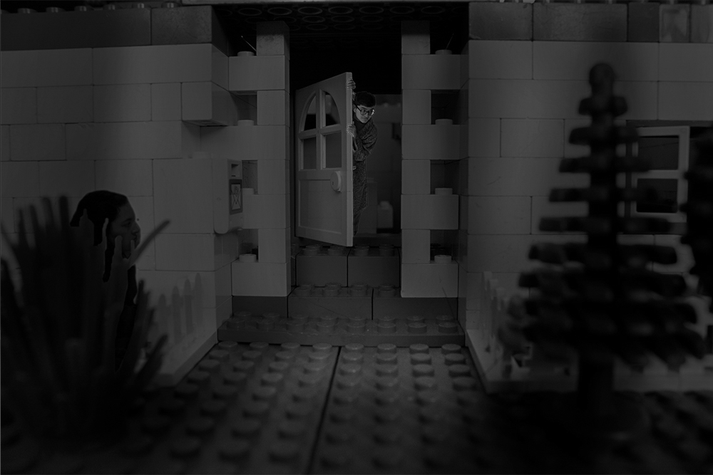
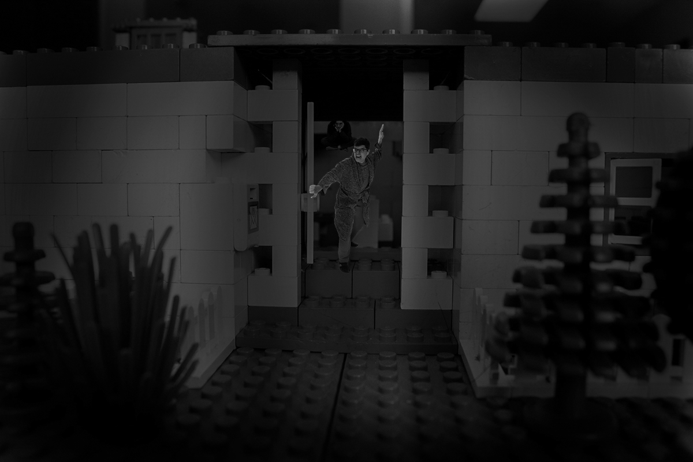
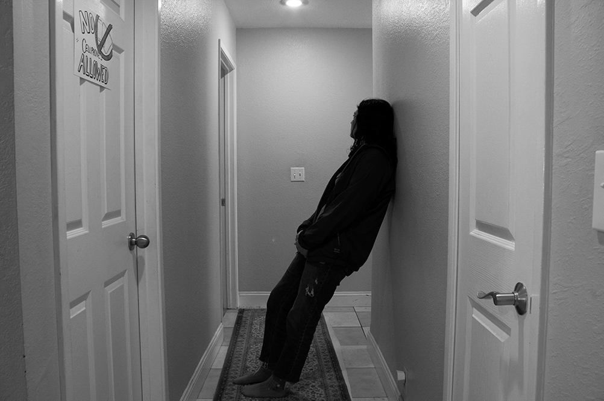
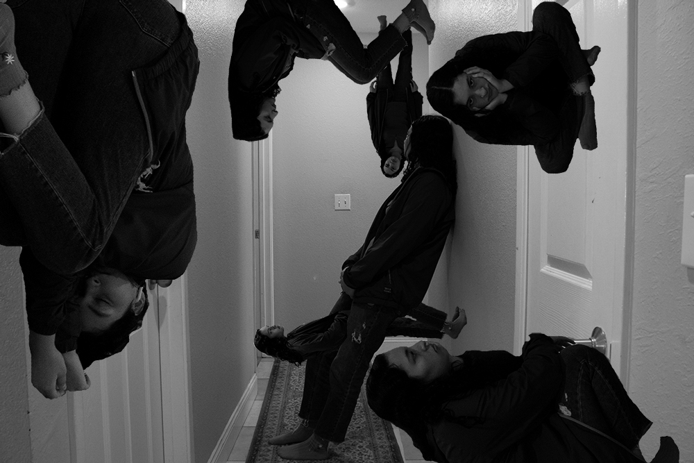
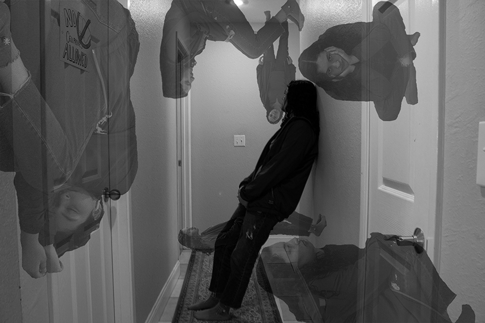
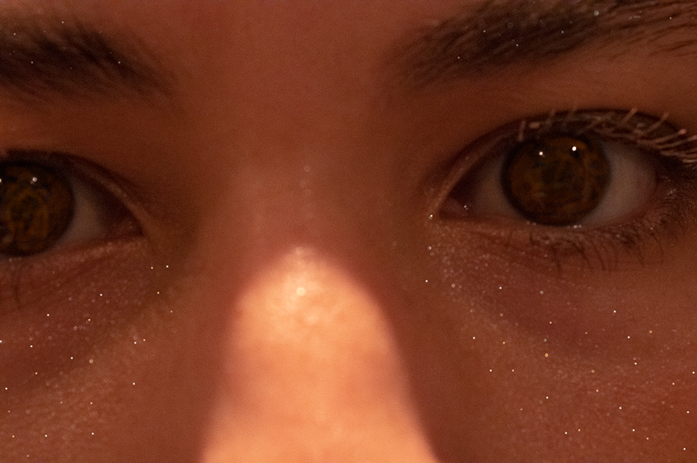

"Reality and Transformation"







"Reality and Transformation," Digital Photography, 2020.
This is a collection of photos that reflects the manipulation of reality inspired by dreams. I wanted to portray the surreal realm created by the random, confusing, and often meaningless nature of dreams through photography. This series consists of three main scenes. Each scene includes a photo that has not undergone as large of an amount of editing as the others which maintains the image’s attachment to reality. However, as the narratives progress, the concept of what is real becomes distorted. This transformation reveals the chaotic energy of dreams and the subconscious where the presence of so many layers of thought, memories, and identity begin to blur and intertwine.
